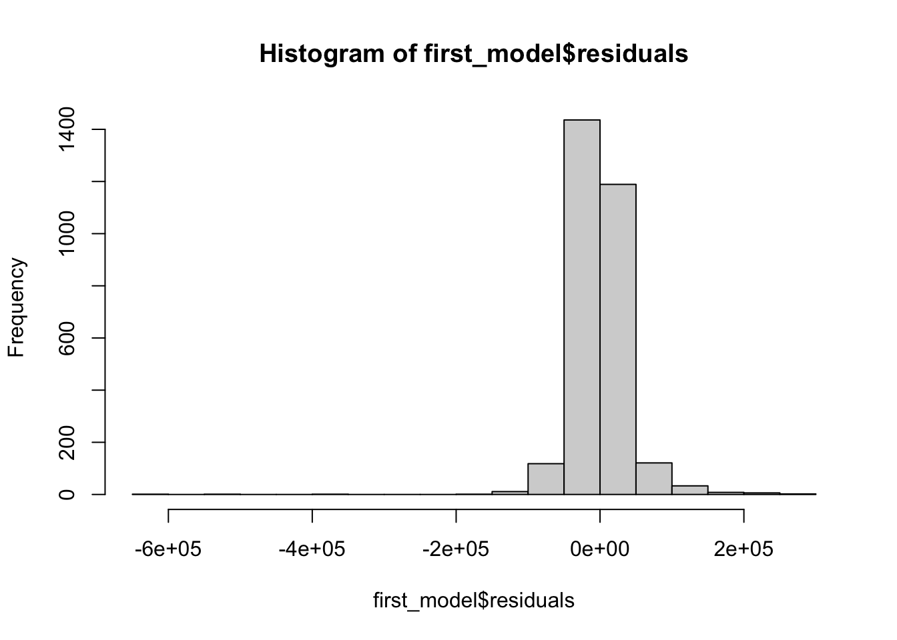
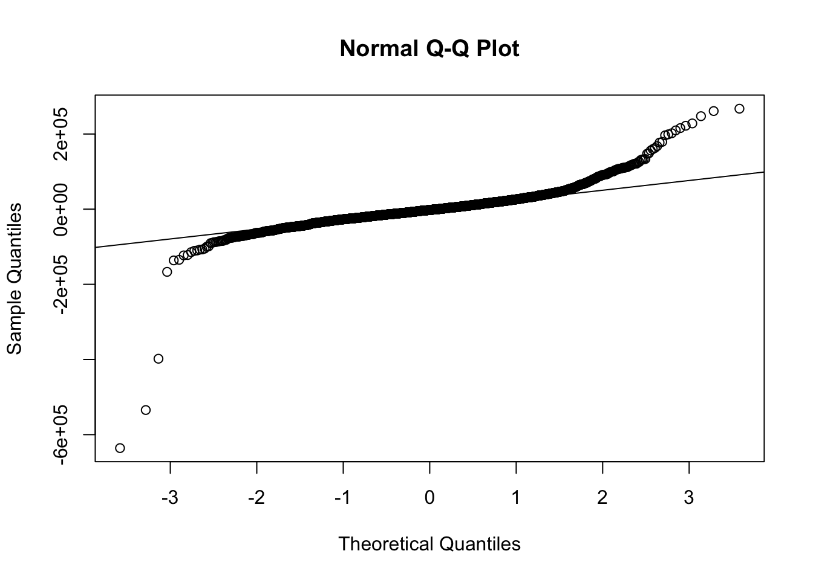
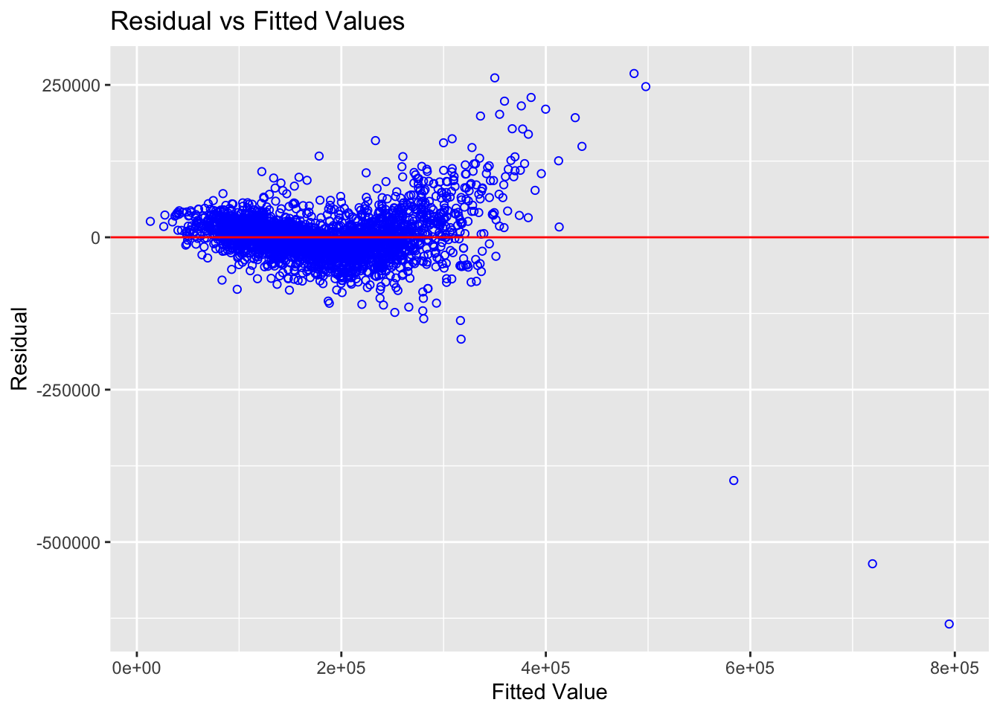
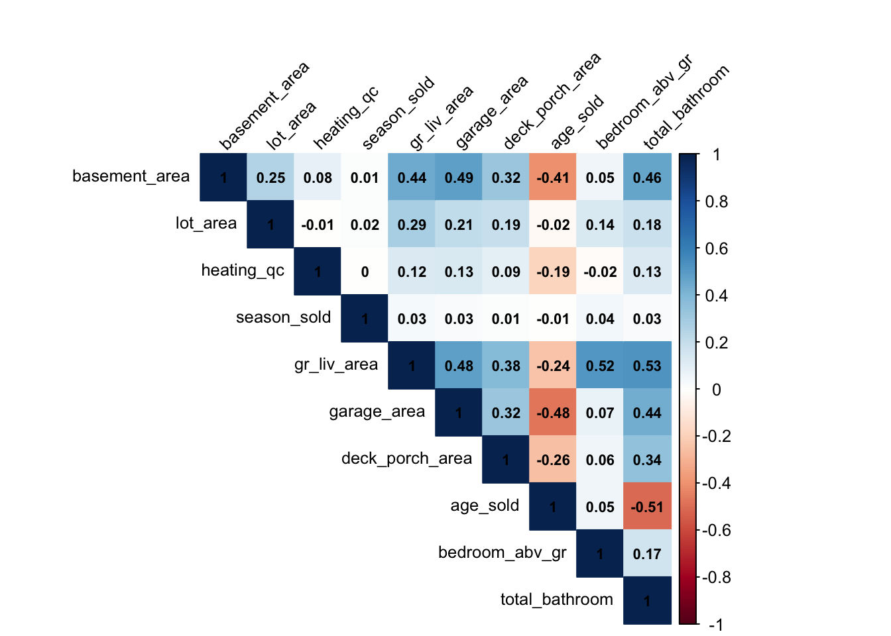

library(tidyverse)
library(PerformanceAnalytics)
library(janitor)
library(corrplot)
library(lmtest)
library(GGally)
library(olsrr)Linear Regression - House prices prediction
Linear Regression Model - House price prediction
Desenvolva um modelo de regressão linear para prever o preço das casas (preços.RData) com base nas variáveis fornecidas:
SalePrice: Preço de venda em dólares
Basement_Area: Área do porão em pés quadrados
Lot_Area: Tamanho do lote em pés quadrados \
Heating_QC: Qualidade e condição do aquecimento
Season_Sold: Estação quando a casa foi vendida
Gr_Liv_Area: Área acima do nível do solo em pés quadrados
Garage_Area: Tamanho da garagem em pés quadrados
Deck_Porch_Area: Área total de decks e varandas em pés quadrados
Age_Sold: Idade da casa quando vendida, em anos
Bedroom_AbvGr: Quartos acima do nível do solo Total_Bathroom:
Número total de banheiros (meio banheiro contado como 10%)
Libraries
Data Prep
Import data
price <- readr::read_rds('dados/precos.rds')Data Summary
summary(price) SalePrice Basement_Area Lot_Area Heating_QC
Min. : 12789 Min. : 0 Min. : 1300 Length:2928
1st Qu.:129500 1st Qu.: 793 1st Qu.: 7441 Class :character
Median :160000 Median : 990 Median : 9444 Mode :character
Mean :180841 Mean :1052 Mean : 10150
3rd Qu.:213500 3rd Qu.:1302 3rd Qu.: 11556
Max. :755000 Max. :6110 Max. :215245
Season_Sold Gr_Liv_Area Garage_Area Deck_Porch_Area
Min. :1.000 Min. : 334 Min. : 0.0 Min. : 0.0
1st Qu.:2.000 1st Qu.:1126 1st Qu.: 320.0 1st Qu.: 22.0
Median :3.000 Median :1442 Median : 480.0 Median : 140.0
Mean :2.608 Mean :1500 Mean : 472.9 Mean : 159.9
3rd Qu.:3.000 3rd Qu.:1742 3rd Qu.: 576.0 3rd Qu.: 247.0
Max. :4.000 Max. :5642 Max. :1488.0 Max. :1424.0
Age_Sold Bedroom_AbvGr Total_Bathroom
Min. : -1.00 Min. :0.000 Min. :0.400
1st Qu.: 7.00 1st Qu.:2.000 1st Qu.:1.100
Median : 34.00 Median :3.000 Median :2.000
Mean : 36.41 Mean :2.855 Mean :2.042
3rd Qu.: 54.00 3rd Qu.:3.000 3rd Qu.:2.100
Max. :136.00 Max. :8.000 Max. :6.200 Cleanup
price <- janitor::clean_names(price)Transformation
# heating column is a character column, need to transform in numeric
unique(price$heating_qc)[1] "Fa" "TA" "Ex" "Gd" "Po"price <- price %>%
dplyr::mutate(heating_qc =
dplyr::case_when(
heating_qc == 'Fa'~ 1,
heating_qc == 'TA'~ 2,
heating_qc == 'Ex'~ 3,
heating_qc == 'Gd'~ 4,
heating_qc == 'Po'~ 5,
TRUE ~ NA
))
unique(price$heating_qc)[1] 1 2 3 4 5Analysis
Model
- First attempt
first_model <- lm(sale_price ~.,
data = price)
summary(first_model)
Call:
lm(formula = sale_price ~ ., data = price)
Residuals:
Min 1Q Median 3Q Max
-634500 -18653 -2113 16004 268707
Coefficients:
Estimate Std. Error t value Pr(>|t|)
(Intercept) 2.080e+04 5.362e+03 3.879 0.000107 ***
basement_area 3.509e+01 2.098e+00 16.726 < 2e-16 ***
lot_area 3.496e-01 9.904e-02 3.530 0.000421 ***
heating_qc 4.887e+03 1.008e+03 4.848 1.31e-06 ***
season_sold 7.934e+02 8.116e+02 0.978 0.328340
gr_liv_area 7.704e+01 2.286e+00 33.706 < 2e-16 ***
garage_area 5.520e+01 4.470e+00 12.349 < 2e-16 ***
deck_porch_area 3.200e+01 5.268e+00 6.074 1.41e-09 ***
age_sold -5.797e+02 3.103e+01 -18.681 < 2e-16 ***
bedroom_abv_gr -1.328e+04 1.090e+03 -12.184 < 2e-16 ***
total_bathroom 7.854e+03 1.301e+03 6.038 1.76e-09 ***
---
Signif. codes: 0 '***' 0.001 '**' 0.01 '*' 0.05 '.' 0.1 ' ' 1
Residual standard error: 39470 on 2917 degrees of freedom
Multiple R-squared: 0.7567, Adjusted R-squared: 0.7559
F-statistic: 907.2 on 10 and 2917 DF, p-value: < 2.2e-16- Stepwise model
step_model <- step(first_model, direction = 'both')Start: AIC=61987.26
sale_price ~ basement_area + lot_area + heating_qc + season_sold +
gr_liv_area + garage_area + deck_porch_area + age_sold +
bedroom_abv_gr + total_bathroom
Df Sum of Sq RSS AIC
- season_sold 1 1.4892e+09 4.5466e+12 61986
<none> 4.5451e+12 61987
- lot_area 1 1.9419e+10 4.5645e+12 61998
- heating_qc 1 3.6622e+10 4.5817e+12 62009
- total_bathroom 1 5.6804e+10 4.6019e+12 62022
- deck_porch_area 1 5.7477e+10 4.6026e+12 62022
- bedroom_abv_gr 1 2.3131e+11 4.7764e+12 62131
- garage_area 1 2.3762e+11 4.7827e+12 62134
- basement_area 1 4.3590e+11 4.9810e+12 62253
- age_sold 1 5.4377e+11 5.0889e+12 62316
- gr_liv_area 1 1.7702e+12 6.3153e+12 62948
Step: AIC=61986.22
sale_price ~ basement_area + lot_area + heating_qc + gr_liv_area +
garage_area + deck_porch_area + age_sold + bedroom_abv_gr +
total_bathroom
Df Sum of Sq RSS AIC
<none> 4.5466e+12 61986
+ season_sold 1 1.4892e+09 4.5451e+12 61987
- lot_area 1 1.9471e+10 4.5661e+12 61997
- heating_qc 1 3.6568e+10 4.5832e+12 62008
- total_bathroom 1 5.7048e+10 4.6036e+12 62021
- deck_porch_area 1 5.7462e+10 4.6041e+12 62021
- bedroom_abv_gr 1 2.3040e+11 4.7770e+12 62129
- garage_area 1 2.3848e+11 4.7851e+12 62134
- basement_area 1 4.3574e+11 4.9823e+12 62252
- age_sold 1 5.4346e+11 5.0901e+12 62315
- gr_liv_area 1 1.7699e+12 6.3165e+12 62947summary(step_model)
Call:
lm(formula = sale_price ~ basement_area + lot_area + heating_qc +
gr_liv_area + garage_area + deck_porch_area + age_sold +
bedroom_abv_gr + total_bathroom, data = price)
Residuals:
Min 1Q Median 3Q Max
-635850 -18919 -1995 16081 267374
Coefficients:
Estimate Std. Error t value Pr(>|t|)
(Intercept) 2.272e+04 4.989e+03 4.553 5.50e-06 ***
basement_area 3.509e+01 2.098e+00 16.723 < 2e-16 ***
lot_area 3.501e-01 9.904e-02 3.535 0.000414 ***
heating_qc 4.883e+03 1.008e+03 4.845 1.34e-06 ***
gr_liv_area 7.703e+01 2.286e+00 33.703 < 2e-16 ***
garage_area 5.529e+01 4.469e+00 12.372 < 2e-16 ***
deck_porch_area 3.199e+01 5.268e+00 6.073 1.42e-09 ***
age_sold -5.795e+02 3.103e+01 -18.676 < 2e-16 ***
bedroom_abv_gr -1.324e+04 1.089e+03 -12.160 < 2e-16 ***
total_bathroom 7.871e+03 1.301e+03 6.051 1.62e-09 ***
---
Signif. codes: 0 '***' 0.001 '**' 0.01 '*' 0.05 '.' 0.1 ' ' 1
Residual standard error: 39470 on 2918 degrees of freedom
Multiple R-squared: 0.7566, Adjusted R-squared: 0.7559
F-statistic: 1008 on 9 and 2918 DF, p-value: < 2.2e-16Checcking assumptions
- Normality test
hist(first_model$residuals)
qqnorm(first_model$residuals)
qqline(first_model$residuals)qqnorm(step_model$residuals)
qqline(step_model$residuals)
- Linearity relationship between dependent and independent variables
lmtest::raintest(first_model)
Rainbow test
data: first_model
Rain = 0.85666, df1 = 1464, df2 = 1453, p-value = 0.9984- Homocedaticity test
olsrr::ols_plot_resid_fit(first_model)
olsrr::ols_test_breusch_pagan(first_model)
Breusch Pagan Test for Heteroskedasticity
-----------------------------------------
Ho: the variance is constant
Ha: the variance is not constant
Data
--------------------------------------
Response : sale_price
Variables: fitted values of sale_price
Test Summary
----------------------------
DF = 1
Chi2 = 8393.7544
Prob > Chi2 = 0.0000 - Checking colniearity/multicolinearity
The correlation matrix below don’t indicate any colinearity constraint
df_features <- price %>% dplyr::select(-sale_price)
cor_matrix <- cor(df_features)
corrplot::corrplot(cor_matrix, method = "color", type = "upper", tl.col = "black", tl.srt = 45,
tl.cex = 0.8, addCoef.col = "black", number.cex = 0.7, mar = c(0,0,2,0)) 
olsrr::ols_vif_tol(first_model) Variables Tolerance VIF
1 basement_area 0.6227292 1.605834
2 lot_area 0.8735339 1.144775
3 heating_qc 0.9525086 1.049859
4 season_sold 0.9974707 1.002536
5 gr_liv_area 0.3987508 2.507832
6 garage_area 0.5760081 1.736087
7 deck_porch_area 0.7841999 1.275185
8 age_sold 0.6027330 1.659110
9 bedroom_abv_gr 0.6542822 1.528392
10 total_bathroom 0.5492968 1.820509Model analysis
mode